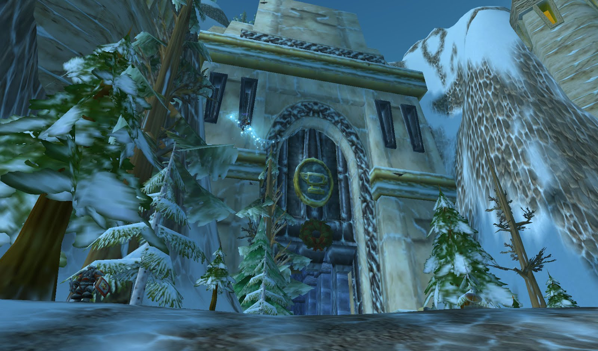

Capital del Reino de los Enanos (World Of Warcraft)
Forjaz es una capital de la Alianza, ciudad principal de los Enanos y los Gnomos de los Reinos del Este.
Hogar de los enanos gobernado bajo el concilio de los tres marillos.
Llamada la ciudad bajo la montaña al ser construida en el norte de la montaña en "Dun Morogh", es muestra de los grandes conocimientos en la arqueología y arquitectura de estas criaturas.

Entrada principal de la capital